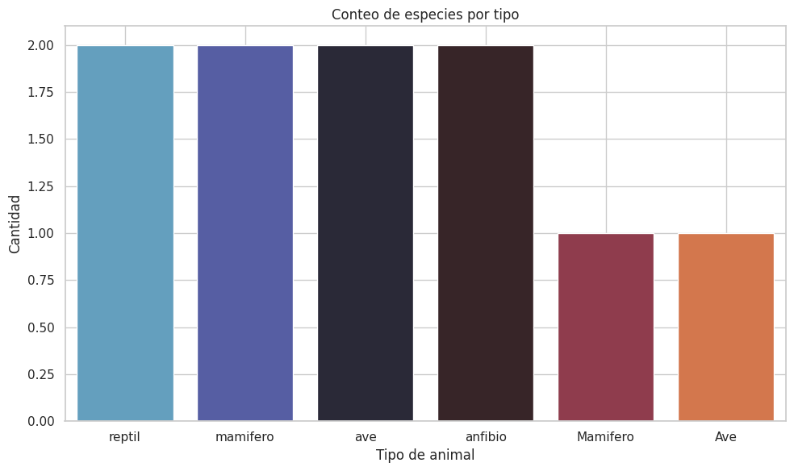
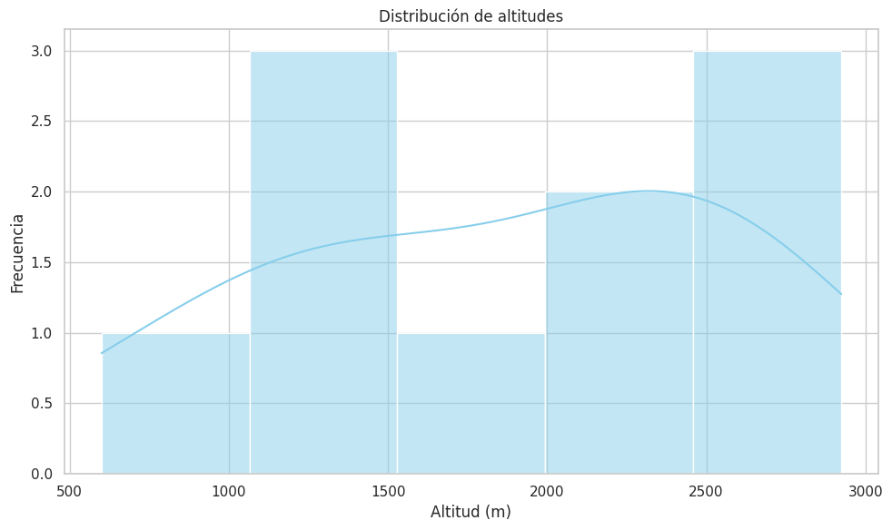
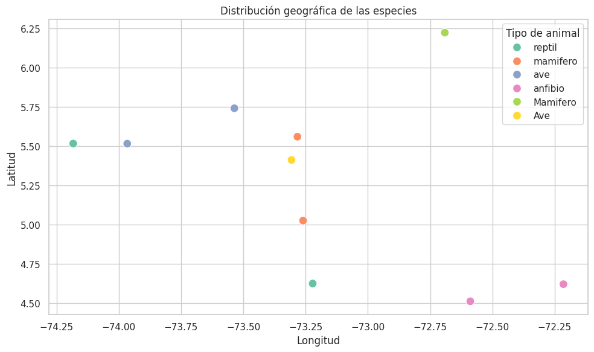

BIODIVERSIDAD EN BOYACÁ Y CUNDINAMARCA


Bienvenidos a la sección dedicada a la flora de Boyacá y Cundinamarca, dos regiones colombianas que se
destacan por su extraordinaria diversidad vegetal. Aquí, te invitamos a sumergirte en el mundo de las
plantas, desde las majestuosas especies de árboles que forman parte de nuestros bosques hasta las del
icadas flores que adornan los páramos y las selvas tropicales.
En Boyacá y Cundinamarca, la riqueza de la flora se manifiesta en una amplia variedad de ecosistemas, que van
desde los páramos andinos hasta las selvas húmedas y los bosques secos tropicales. Descubre plantas endémicas, muchas de las cuales no se encuentran en ningún otro lugar del mundo, y aprende sobre las características y adaptaciones que les permiten prosperar en sus respectivos hábitats.
Nuestra misión es proporcionar información detallada y accesible sobre la flora local, promoviendo el
conoimiento y la apreciación de estas plantas y destacando la importancia de su conservación. Acompáñanos en
este recorrido botánico y déjate sorprender por la belleza y diversidad de la flora de Boyacá y Cundinamarca.
¡Explora con nosotros la riqueza vegetal que estas regiones tienen para ofrecer y aprende cómo podemos
proteger este valioso legado natural!
Bienvenidos a nuestra sección dedicada a la fauna de Boyacá y Cundinamarca, dos regiones colombianas que albergan una impresionante variedad de
especies animales. En este espacio, te invitamos a conocer la increíble diversidad de la vida silvestre que habita nuestros bosques, ríos,
páramos y selvas. Desde majestuosos mamíferos y aves exóticas hasta reptiles fascinantes e insectos sorprendentes, la fauna de Boyacá y Cundinamarca
es un testimonio de la rica biodiversidad que caracteriza a estas zonas. Aquí podrás aprender sobre las especies endémicas y en peligro de extinción, así como
sobre las adaptaciones únicas que les permiten sobrevivir en sus hábitats naturales. Nuestra misión es ofrecerte información detallada y actualizada sobre la fauna local, promoviendo la conciencia y el aprecio por estos
animales y subrayando la importancia de su conservación. Acompáñanos en este viaje por el mundo animal y descubre cómo puedes contribuir a
la protección de estas especies y sus ecosistemas.
¡Explora con nosotros la fascinante vida silvestre de Boyacá y Cundinamarca y únete a nuestros esfuerzos por preservar este valioso patrimonio
natural!

Boyacá, en el corazón de los Andes colombianos, es una región rica en historia, cultura y biodiversidad.
Famosa por su papel en la independencia de Colombia, alberga pueblos coloniales como Villa de Leyva y
Tunja, con una notable herencia arquitectónica. Sus diversos paisajes, desde páramos altos hasta valles
fértiles, son hogar de una impresionante variedad de flora y fauna. Boyacá ofrece una experiencia
única donde se fusionan naturaleza y patrimonio histórico.
Conocé más
Cundinamarca, situada en el centro de Colombia, es una región que combina modernidad y tradición con
una rica diversidad natural. Hogar de la capital, Bogotá, Cundinamarca destaca por su vibrante vida
urbana, su patrimonio cultural y sus impresionantes paisajes que incluyen montañas, valles y páramos.
La región es conocida por sus sitios históricos, como Zipaquirá con su famosa Catedral de Sal, y sus
numerosos parques naturales que albergan una gran variedad de flora y fauna. Cundinamarca ofrece una
mezcla perfecta de cultura, historia y naturaleza, convirtiéndola en un destino imperdible.
Conocé más
 |
 |
|
 |
 |
 |
 |
 |
|
| 🐻 En este gráfico se presenta un conteo de especies por tipo de animal 🐸 |  |
|---|---|
|  | 🌄 En el siguiente gráfico se presenta la distribución de altitudes donde se encuentran diferentes especies 🗻 |
| 🐦 Este gráfico muestra la distribución de las especies por tipo, según las coordenadas de su ubicación 🗺 |  |